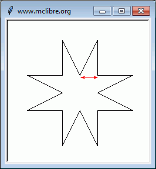

Estos ejercicios corresponden a lo explicado en la lección sobre el módulo turtle (2), aunque en el apartado B se utilizan también bucles, tratados en la lección bucle for (1). Los ejercicios están separados en dos bloques:
Las capturas corresponden al resultado de la ejecución del programa, sin cambiar el tamaño de la ventana ni mover las barras de desplazamiento.
Salvo que se indique lo contrario en el enunciado, los tamaños y distancias no tiene por qué coincidir exactamente con el ejemplo, basta con mantener las proporciones.
A. Figuras de tamaño variable
turtle (2) - A-1 - Figuras
Escriba ocho programas que soliciten el tamaño del dibujo y generen los siguientes dibujos (la flecha roja indica el tamaño que ha escrito el usuario, el programa no debe dibujarla).
Nota: En este ejercicio, las figuras están más o menos centradas en el origen, por lo que algunos puntos tendrán coordenadas negativas.

turtle (2) A-2 - Letras
Escriba ocho programas que soliciten el tamaño del dibujo y generen los siguientes dibujos (la flecha roja indica el tamaño que ha escrito el usuario, el programa no debe dibujarla).
Nota: En este ejercicio, las figuras están en el primer cuadrante, es decir, los puntos no tienen coordenadas negativas.
B. Bucles
turtle (2) - B-1 - Puntos en en semieje positivo
Escriba un programa que solicite un número entre 0 y 10 y dibuje ese número de puntos formando una línea horizontal desde el origen (el usuario tendrá que ampliar la ventana para ver todos los puntos). La separación entre puntos será de 50 píxeles y el grosor de los puntos 10 píxeles:
Modifique el programa anterior de manera que el programa solicite también la separación entre puntos (entre 10 y 50 píxeles):
Modifique el programa anterior de manera que se escriba sobre el punto el número de punto.
Modifique el programa anterior de manera que se puedan solicitar hasta 100 puntos y que el espacio de dibujo contenga el dibujo completo (de manera que con las barras de desplazamiento se pueda ver todo el dibujo, sin necesidad de modificar la ventana):
Modifique el programa anterior de manera que:
el programa solicite también el grosor de los puntos (entre 3 y 50 píxeles)
que la separación sea como mínimo el grosor de los puntos, como máximo 5 veces el grosor y el valor predeterminado debe ser el valor medio entre el mínimo y el máximo.
turtle (2) - B-2 - Puntos centrados
Modifique los programas del ejercicio anterior de manera que los puntos se dibujen centrados en la ventana:
Ayuda: Si n es el número de puntos, el ancho total del dibujo es 50 * (n-1) y la abcisa del primer punto es -50 * (n-1) / 2
turtle (2) - B-3 - Puntos
Escriba un programa que solicite el número de puntos (entre 2 y 20) y su grosor (entre 10 y 30 píxeles) y dibuje los puntos formando una línea horizontal desde el origen (el usuario tendrá que ampliar la ventana para ver todos los puntos):
Modifique el programa anterior de manera que el color de los puntos vaya cambiando del negro al blanco:
Ayuda: Si n es el número de puntos, el color va cambiando en cada punto 1 / n (o 255 / n, según el modo de color utilizado).
Modifique el programa del apartado 1 de manera que se dibuje un cuadrado de puntos:
Modifique el programa anterior de manera que se dibuje un cuadrado de puntos del negro al blanco:
Modifique el programa anterior de manera que se dibuje un cuadrado de puntos del negro al blanco:
Modifique el programa anterior de manera que se dibuje un cuadrado de puntos del negro al blanco:
turtle (2) - B-4 - Líneas
Escriba un programa que dibuje once líneas verticales, separadas 20 píxeles y de 200 píxeles de longitud, con la esquina inferior izquierda del dibujo en el origen del sistema de coordenadas:
Modifique el programa anterior de manera que solicite el número de líneas (el dibujo resultante debe tener forma cuadrada, es decir, la altura de las líneas debe ser igual al ancho del dibujo):
Modifique el programa anterior de manera que solicite también la separación entre líneas (el dibujo resultante debe tener forma cuadrada, es decir, la altura de las líneas debe ser igual al ancho del dibujo):
Modifique el programa anterior de manera que dibuje una rejilla cuadrada.
Modifique el programa anterior de manera que dibuje una rejilla rectangular.
turtle (2) - B-5 - Cuadrados
Escriba un programa que dibuje un cuadrado de 50 píxeles de lado, con la esquina inferior izquierda en el origen del sistema de coordenadas:
Modifique el programa anterior de manera que solicite el tamaño del cuadrado:
Modifique el programa anterior de manera que pida además cuántos cuadrados quiere dibujar. Los cuadrados se dibujarán en horizontal separados el ancho del cuadrado.
Modifique el programa del apartado 2 de manera que pida además cuántos cuadrados quiere dibujar. Los cuadrados se dibujarán con la esquina inferior izquierda en el origen, aumentando su tamaño 20 píxeles cada vez.